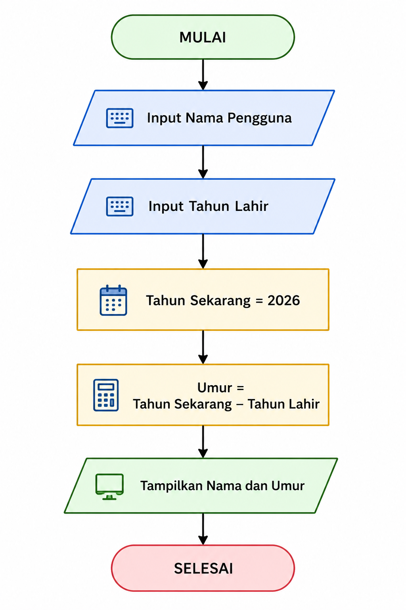

Algoritma Pemograman
Website ini dibuat sebagai media dokumentasi dan pengumpulan tugas mata kuliah Algoritma Pemrograman. Seluruh tugas disusun dalam bentuk website agar mudah diakses dan dipelajari kembali.
Nama : Raffael Augustian Fathir
NIM : 250403010001
Prodi : Teknik Informatika
Deskripsi Program
Program ini digunakan untuk menghitung umur seseorang berdasarkan tahun lahir yang dimasukkan oleh pengguna. Pengguna diminta memasukkan nama dan tahun lahir, kemudian program akan menghitung umur berdasarkan tahun sekarang yaitu 2026. Program dibuat menggunakan algoritma skuensial, yaitu langkah-langkah program dijalankan secara berurutan mulai dari input, proses, hingga output.
Algoritma
- Mulai
- Input nama pengguna
- Input tahun lahir
- Tentukan tahun sekarang
- Hitung umur
- Tampilkan hasil
- Selesai
Flowchart

Pseudocode
START INPUT nama INPUT tahun_lahir tahun_sekarang = 2026 umur = tahun_sekarang - tahun_lahir OUTPUT nama OUTPUT umur END
Program Python
# Program Menghitung Umur
nama = input("Masukkan nama : ")
tahun_lahir = int(input("Masukkan tahun lahir : "))
tahun_sekarang = 2026
umur = tahun_sekarang - tahun_lahir
print("Umur :", umur)
Contoh Output
Masukkan nama : Mulyono Masukkan tahun lahir : 2004 HASIL Nama : Mulyono Umur : 22 tahun
Perulangan FOR
Perulangan FOR digunakan untuk mengulang suatu proses dengan jumlah perulangan tertentu.
print("Perulangan FOR")
for i in range(1, 11):
print(i)
Output
1 2 3 4 5 6 7 8 9 10
Perulangan WHILE
Perulangan WHILE digunakan untuk mengulang program selama kondisi bernilai TRUE.
print("Perulangan WHILE")
i = 1
while i <= 10:
print(i)
i += 1
Output
1 2 3 4 5 6 7 8 9 10
Perulangan DO-WHILE
Python tidak memiliki do-while asli, sehingga dibuat menggunakan while True.
while True:
password = input("Masukkan Password : ")
if password == "admin":
print("Password Benar")
break
print("Password Salah")
Output
Masukkan Password : admin Password Benar
Nested Loop
Nested Loop adalah perulangan di dalam perulangan.
for i in range(5):
for j in range(5):
print("*", end=" ")
print()
Output
* * * * * * * * * * * * * * * * * * * * * * * * *